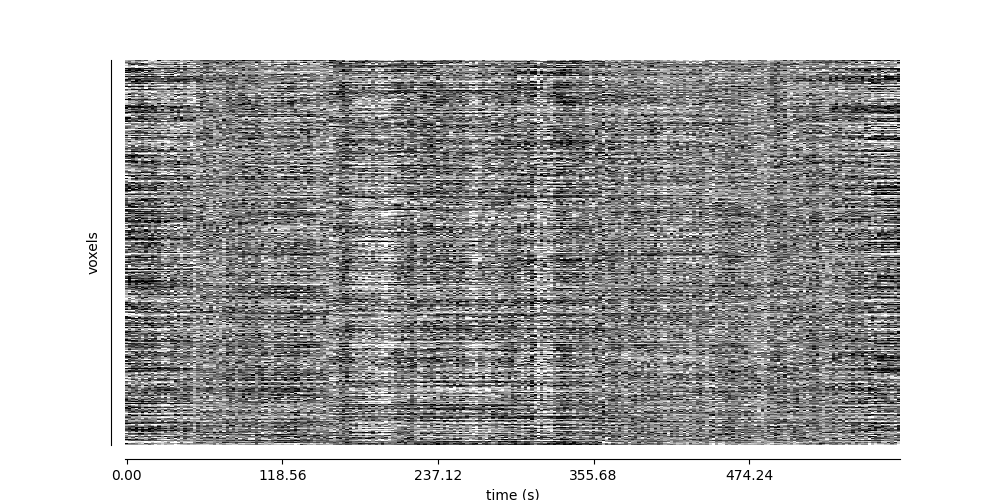

Denoising of multi-echo fMRI data with tedana
1
enekourunuela.com

Slides available online
2
enekourunuela.com
Create a conda or mamba environment
As simple as:
$ mamba create -p ~/conda_envs/MRITogether python=3.8
$ source activate ~/conda_envs/MRITogether
3
enekourunuela.com
Install tedana
As simple as:
$ pip install tedana
4
enekourunuela.com
Check you’re on the latest version
$ tedana --version
tedana v0.0.12
5
enekourunuela.com
Create data folder
$ mkdir ~/MRITogether
$ cd ~/MRITogether
6
enekourunuela.com
Data: https://osf.io/9wcb8/
7
enekourunuela.com
Download subject data as zip
8
enekourunuela.com
Move data and unzip
$ mv ~/Downloads/sub-04570.zip .
$ unzip sub-04570.zip
$ rm -rf sub-04570.zip
9
enekourunuela.com
What do we have here?
$ ls -lah
total 0
drwxr-xr-x 6 eurunuela staff 192B Dec 1 15:27 .
drwxr-x---+ 76 eurunuela staff 2.4K Dec 1 15:27 ..
drwxr-xr-x 19 eurunuela staff 608B Dec 1 15:26 anat
drwxr-xr-x 14 eurunuela staff 448B Dec 1 15:26 figures
drwxr-xr-x 11 eurunuela staff 352B Dec 1 15:26 func
drwxr-xr-x 3 eurunuela staff 96B Dec 1 15:26 log
10
enekourunuela.com
$ ls -lah func/
total 384520
drwxr-xr-x 11 eurunuela staff 352B Dec 1 15:26 .
drwxr-xr-x 6 eurunuela staff 192B Dec 1 15:27 ..
-rw------- 1 eurunuela staff 151K Dec 1 14:15 sub-04570_task-rest_desc-confounds_timeseries.json
-rw------- 1 eurunuela staff 509K Dec 1 14:15 sub-04570_task-rest_desc-confounds_timeseries.tsv
-rw------- 1 eurunuela staff 49M Dec 1 14:15 sub-04570_task-rest_echo-1_space-scanner_desc-partialPreproc_bold.nii.gz
-rw------- 1 eurunuela staff 47M Dec 1 14:14 sub-04570_task-rest_echo-2_space-scanner_desc-partialPreproc_bold.nii.gz
-rw------- 1 eurunuela staff 46M Dec 1 14:14 sub-04570_task-rest_echo-3_space-scanner_desc-partialPreproc_bold.nii.gz
-rw------- 1 eurunuela staff 45M Dec 1 14:14 sub-04570_task-rest_echo-4_space-scanner_desc-partialPreproc_bold.nii.gz
-rw------- 1 eurunuela staff 247B Dec 1 14:14 sub-04570_task-rest_from-T1w_to-scanner_mode-image_xfm.txt
-rw------- 1 eurunuela staff 247B Dec 1 14:14 sub-04570_task-rest_from-scanner_to-T1w_mode-image_xfm.txt
-rw------- 1 eurunuela staff 3.4K Dec 1 14:14 sub-04570_task-rest_space-scanner_desc-brain_mask.nii.gz
11
enekourunuela.com
We are ready to go!
12
enekourunuela.com
The tedana command
$ tedana -d func/sub-04570_task-rest_echo-1_space-scanner_desc-partialPreproc_bold.nii.gz func/sub-04570_task-rest_echo-2_space-scanner_desc-partialPreproc_bold.nii.gz func/sub-04570_task-rest_echo-3_space-scanner_desc-partialPreproc_bold.nii.gz func/sub-04570_task-rest_echo-4_space-scanner_desc-partialPreproc_bold.nii.gz -e 12 28 44 60 --mask func/sub-04570_task-rest_space-scanner_desc-brain_mask.nii.gz --out-dir tedana --tedpca mdl --prefix sub-04570_task-rest_space-scanner --fittype curvefit --verbose
13
enekourunuela.com
Let’s check the outputs
$ ls
anat figures func log tedana
14
enekourunuela.com
We get a bunch of files
$ ls tedana
- and maps
- PCA and ICA metrics
- Optimally combined data
- Each of the echoes
- A mask of the good data
- A folder with component figures
15
enekourunuela.com
16
enekourunuela.com
Automatic classification of ICA components is not perfect
17
enekourunuela.com
18
enekourunuela.com
Rica
Easy, fast way to visualize and classify components
19
enekourunuela.com
20
enekourunuela.com
If you do (or want to do) web dev and want to contribute, DM me! üôè
21
enekourunuela.com
Rica makes it easy to run tedana with our manual classification
22
enekourunuela.com
tedana with manual classification
$ tedana -d func/sub-04570_task-rest_echo-1_space-scanner_desc-partialPreproc_bold.nii.gz func/sub-04570_task-rest_echo-2_space-scanner_desc-partialPreproc_bold.nii.gz func/sub-04570_task-rest_echo-3_space-scanner_desc-partialPreproc_bold.nii.gz func/sub-04570_task-rest_echo-4_space-scanner_desc-partialPreproc_bold.nii.gz -e 12 28 44 60 --mask func/sub-04570_task-rest_space-scanner_desc-brain_mask.nii.gz --out-dir tedana_manual --prefix sub-04570_task-rest_space-scanner --verbose --t2smap tedana/sub-04570_task-rest_space-scanner_T2starmap.nii.gz --mix tedana/sub-04570_task-rest_space-scanner_desc-ICA_mixing.tsv --ctab tedana/manual_classification.tsv
23
enekourunuela.com
import matplotlib.pyplot as plt
from nilearn.plotting import plot_carpet
fig, axs = plt.subplots(2,1)
axs[0] = plot_carpet("sub-04570_task-rest_space-scanner_desc-optcom_bold.nii.gz", "../func/sub-04570_task-rest_space-scanner_desc-brain_mask.nii.gz")
axs[1] = plot_carpet("sub-04570_task-rest_space-scanner_desc-optcomDenoised_bold.nii.gz", "../func/sub-04570_task-rest_space-scanner_desc-brain_mask.nii.gz")
24
enekourunuela.com

Before
After
25
enekourunuela.com
Different levels of denoising
26
enekourunuela.com
from os.path import join as opj
import pandas as pd # A library for working with tabular data
# Files from fMRIPrep
data_file = "sub-04570_task-rest_space-scanner_desc-optcom_bold.nii.gz"
mask_file = "sub-04570_task-rest_space-scanner_desc-brain_mask.nii.gz"
confounds_file = "sub-04570_task-rest_desc-confounds_timeseries.tsv"
# Files from tedana (after running on fMRIPrepped data)
mixing_file = "sub-04570_task-rest_space-scanner_desc-ICA_mixing.tsv"
metrics_file = "sub-04570_task-rest_space-scanner_desc-tedana_metrics.tsv"
# Load the mixing matrix
mixing_df = pd.read_table(opj("tedana_manual",mixing_file)) # Shape is time-by-components
# Load the component table
metrics_df = pd.read_table(opj("tedana_manual", metrics_file))
rejected_columns = metrics_df.loc[metrics_df["classification"] == "rejected", "Component"]
accepted_columns = metrics_df.loc[metrics_df["classification"] == "accepted", "Component"]
27
enekourunuela.com
# Load the fMRIPrep confounds file
confounds_df = pd.read_table(opj("func", confounds_file))
# Select external nuisance regressors we want to use for denoising
confounds = confounds_df[
[
"trans_x",
"trans_y",
"trans_z",
"rot_x",
"rot_y",
"rot_z",
"csf",
"white_matter",
]
].to_numpy()
# Select "bad" components from the mixing matrix
rejected_components = mixing_df[rejected_columns].to_numpy()
accepted_components = mixing_df[accepted_columns].to_numpy()
28
enekourunuela.com
Aggressive denoising
Remove all noise-correlated fluctuations
29
enekourunuela.com
import numpy as np # A library for working with numerical data
from nilearn.maskers import NiftiMasker # A class for masking and denoising fMRI data
# Combine the rejected components and the fMRIPrep confounds into a single array
regressors = np.hstack((rejected_components, confounds))
masker = NiftiMasker(
mask_img=opj("func", mask_file),
standardize_confounds=True,
standardize=False,
smoothing_fwhm=None,
detrend=False,
low_pass=None,
high_pass=None,
t_r=None, # This shouldn't be necessary since we aren't bandpass filtering
reports=False,
)
# Denoise the data by fitting and transforming the data file using the masker
denoised_img_2d = masker.fit_transform(opj("tedana_manual", data_file), confounds=regressors)
# Transform denoised data back into 4D space
denoised_img_4d = masker.inverse_transform(denoised_img_2d)
# Save to file
denoised_img_4d.to_filename(
opj("func", "sub-04570_task-rest_space-scanner_desc-aggrDenoised_bold.nii.gz")
)
30
enekourunuela.com
Non-aggresive denoising
Remove noise-correlated fluctuations that are not correlated with accepted components
31
enekourunuela.com
import numpy as np # A library for working with numerical data
from nilearn.masking import apply_mask, unmask # Functions for (un)masking fMRI data
# Apply the mask to the data image to get a 2d array
data = apply_mask(opj("tedana_manual", data_file), opj("func", mask_file))
# Fit GLM to accepted components, rejected components and nuisance regressors
# (after adding a constant term)
regressors = np.hstack(
(
confounds,
rejected_components,
accepted_components,
np.ones((mixing_df.shape[0], 1)),
),
)
betas = np.linalg.lstsq(regressors, data, rcond=None)[0][:-1]
# Denoise the data using the betas from just the bad components
confounds_idx = np.arange(confounds.shape[1] + rejected_components.shape[1])
pred_data = np.dot(np.hstack((confounds, rejected_components)), betas[confounds_idx, :])
data_denoised = data - pred_data
# Save to file
denoised_img = unmask(data_denoised, opj("func", mask_file))
denoised_img.to_filename(
opj("func", "sub-04570_task-rest_space-scanner_desc-nonaggrDenoised_bold.nii.gz")
)
32
enekourunuela.com
Orthogonalize the noise components w.r.t. the accepted components prior to denoising
33
enekourunuela.com
import numpy as np # A library for working with numerical data
from nilearn.maskers import NiftiMasker # A class for masking and denoising fMRI data
# Combine the confounds and rejected components in a single array
bad_timeseries = np.hstack((rejected_components, confounds))
# Regress the good components out of the bad time series to get "pure evil" regressors
betas = np.linalg.lstsq(accepted_components, bad_timeseries, rcond=None)[0]
pred_bad_timeseries = np.dot(accepted_components, betas)
orth_bad_timeseries = bad_timeseries - pred_bad_timeseries
# Once you have these "pure evil" components, you can denoise the data
masker = NiftiMasker(
mask_img=opj("func", mask_file),
standardize_confounds=True,
standardize=False,
smoothing_fwhm=None,
detrend=False,
low_pass=None,
high_pass=None,
t_r=None, # This shouldn't be necessary since we aren't bandpass filtering
reports=False,
)
# Denoise the data by fitting and transforming the data file using the masker
denoised_img_2d = masker.fit_transform(opj("tedana_manual", data_file), confounds=orth_bad_timeseries)
# Transform denoised data back into 4D space
denoised_img_4d = masker.inverse_transform(denoised_img_2d)
# Save to file
denoised_img_4d.to_filename(
opj("func", "sub-04570_task-rest_space-scanner_descorthAggrDenoised_bold.nii.gz")
)
34
enekourunuela.com
You can also use --tedort
But only considers components,
no regressors
35
enekourunuela.com
Recap
tedana -d filenames -e echo_times- Automatic classification is not perfect: use Rica!
- Rerun tedana with manual classification
- Denoise with confounds if needed/interested
36
enekourunuela.com
A little teaser
37
enekourunuela.com
38
enekourunuela.com
Thank you!
Get in touch @eurunuela or e.urunuela@bcbl.eu
39
enekourunuela.com